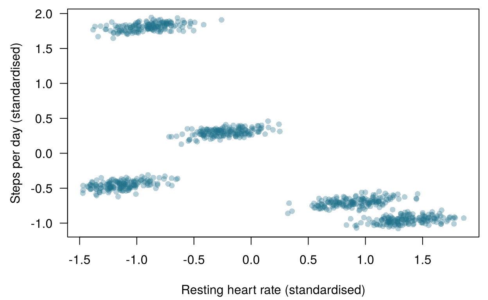
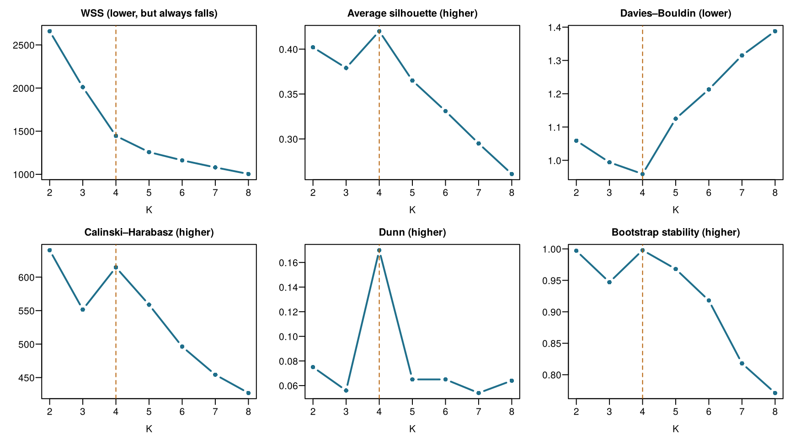
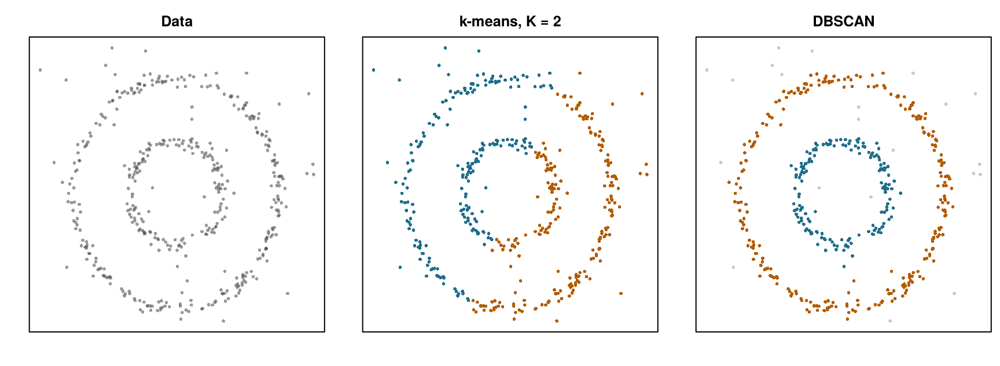
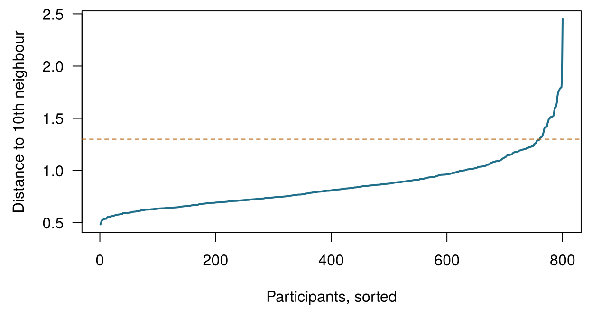
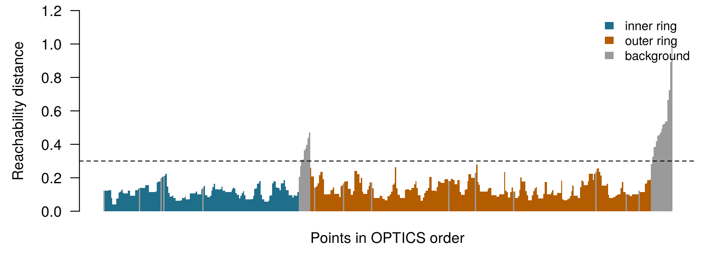
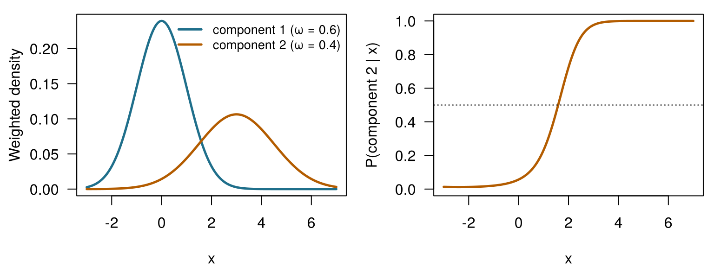
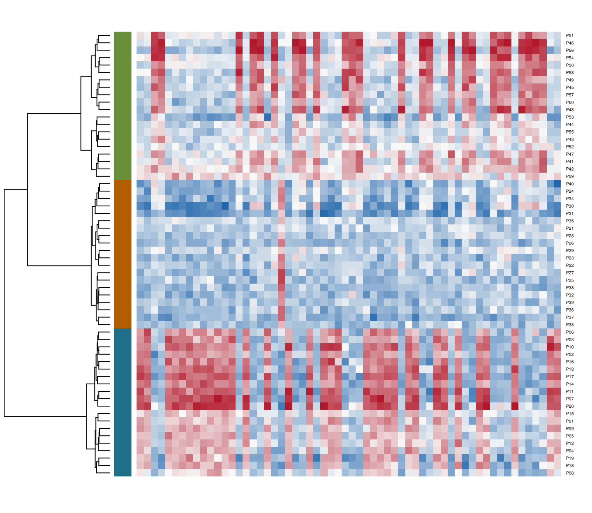

| ID | Resting HR (bpm) | HRV, SDNN (ms) | Steps/day | Skin temp. (°C) | SpO2 (%) | Sleep efficiency | True phenotype |
|---|---|---|---|---|---|---|---|
| W001 | 62.76 | 80.89 | 11861 | 33.69 | 98.15 | 0.95 | healthy_active |
| W002 | 62.57 | 94.25 | 11992 | 32.25 | 98.14 | 0.92 | healthy_active |
| W003 | 58.01 | 77.88 | 11827 | 32.12 | 98.66 | 1.14 | healthy_active |
| W004 | 55.17 | 77.05 | 11715 | 31.82 | 97.76 | 0.94 | healthy_active |
| W005 | 61.49 | 72.71 | 11917 | 32.25 | 97.82 | 1.00 | healthy_active |
| W006 | 59.90 | 67.43 | 12037 | 31.94 | 98.11 | 0.99 | healthy_active |
11 Clustering patients
Clustering is unsupervised: it works without known outcomes. For each question below, decide whether it needs labels (an outcome recorded for past cases, as in supervised learning) or can be tackled by clustering (no outcome at all). Take your best guess — the chapter explains the difference in practice.
| Question | Your answer |
|---|---|
| Predict whether a HomeBeat participant will have a deterioration event, learning from past participants whose events were recorded. | |
| Group 800 smartwatch wearers by their daily signal profiles, with no diagnosis attached. | |
| Look for molecular subtypes among 60 tumours from the expression of 300 genes. | |
| Estimate Aoife's change in creatinine from 1 250 past ICU patients. | |
| Find families of CellWorks batches with similar process conditions, without looking at potency. |
How to use this chapter
Starting here?
This chapter borrows a few ideas from earlier ones:
- Each row of a dataset is an instance with features \(\mathbf{x}_i\) (Definition 1.7). Unsupervised learning looks for structure in data that have no outcome (Section 1.6.2).
- A model that is too flexible overfits: it fits noise that will not come back in new data (Definition 1.8). Settings chosen by the analyst rather than learned, such as the \(k\) of \(k\)-nearest neighbours, are hyperparameters (Chapter 3).
- The normal distribution describes measurements that scatter symmetrically around a mean, and the likelihood measures how well a model with given parameters explains the data (Chapter 2).
- The distance \(d(\mathbf{x}_i, \mathbf{x}_{i'})\) between two patients is usually Euclidean; features are standardised (centred and divided by their standard deviation) so that each counts equally; PCA summarises many correlated features by a few new axes, the principal components, that keep as much of the variation as possible (Chapter 10).
- Real records have missing values, and how they went missing matters (Chapter 9).
| Example | Who or what | Outcome | Faces you will meet |
|---|---|---|---|
| 1 Ward 7 ICU | 1 250 ICU patients in 4 hospitals | change in creatinine over 48 h (acute kidney injury if ≥ 0.3 mg/dL) | Aoife (71, sepsis, borderline risk), Tomás (54, low risk), Priya (38, high risk); Dr Emma Walsh; Seán, the pharmacist |
| 2 ONCO-1 trial | 1 000 patients randomised to chemotherapy or not | tumour shrinkage (%) | patients #0042 and #0917 |
| 3 HomeBeat | 500 people wearing a smartwatch at home | stress score, deterioration event | Lena |
| 4 CellWorks | 420 production batches of a cell therapy | potency score | batch CW-118 |
All four datasets are simulated and can be downloaded from the data appendix. The full introduction is in Section 1.1.
Besides HomeBeat, this chapter uses two teaching datasets described in its own sections: a pilot cohort of 800 smartwatch wearers and a matrix of 300 gene-expression values for 60 patients. Both are simulated.
This chapter is about finding groups when nobody has told you what the groups are. It has ten sections and a Lab, eight quick checks, three “Try it” widgets, a challenge and three coding missions in R and Python. Allow about two hours. Everything in the widgets runs in your browser; the slower analyses were run once and their results are loaded from files.
Notation at a glance (for lookup only)
| Symbol | Meaning | Section |
|---|---|---|
| \(K\) | number of clusters | Section 11.1 |
| \(C_k\), \(n_k\) | cluster \(k\) and the number of instances in it | Section 11.1 |
| \(\mathbf{\mu}_k\) | centroid (mean vector) of cluster \(k\) | Section 11.1 |
| \(g_i\) | cluster label of instance \(i\), a number from 1 to \(K\) | Section 11.3 |
| WSS, BSS | within- and between-cluster sums of squares | Section 11.3 |
| \(s(i)\) | silhouette of instance \(i\) | Section 11.4 |
| ARI | adjusted Rand index | Section 11.5 |
| \(r\), minPts | DBSCAN neighbourhood radius (eps in software) and minimum neighbours |
Section 11.6 |
| \(\omega_k\), \(\mathbf{\Sigma}_k\) | mixing proportion and covariance matrix of component \(k\) | Section 11.7 |
The full list is on the notation page. \(K\) is used only for clusters; the number of cross-validation folds is \(V\).
11.1 What is a cluster?
Definition 11.1 (Cluster and clustering) A cluster is a group of instances that are more similar to one another than to instances in other groups, according to a stated measure of similarity. Clustering is the task of finding such groups in data that carry no outcome labels. A partition assigns every instance to exactly one of \(K\) clusters \(C_1, \dots, C_K\), with \(n_k\) instances in \(C_k\).
Notice the phrase according to a stated measure. There is no single, method-free definition of a “true” cluster: a group that is obvious under one notion of similarity can vanish under another (Hennig 2015). Every clustering method in this chapter makes its own choice — round groups around a centre, dense regions separated by sparse ones, overlapping bell curves, a tree of nested merges — and finds groups of that kind.
Clustering methods come from two broad perspectives. Flat (partitioning) methods look for one partition into a chosen number of groups \(K\); \(k\)-means, \(k\)-medoids and Gaussian mixtures are of this kind. Hierarchical methods do not commit to one \(K\): they build a tree of nested groups, from every patient on their own up to everyone together, which can be cut at any level. We start flat and finish with trees.
Many flat methods summarise a cluster by a representative point.
Definition 11.2 (Centroid and medoid) The centroid of cluster \(C_k\) is the mean of its members, \(\mathbf{\mu}_k = \frac{1}{n_k}\sum_{i \in C_k} \mathbf{x}_i\): the coordinate-wise average, a synthetic point that need not coincide with any real patient. The medoid is the member of the cluster with the smallest average distance to all other members: always a real patient.
The centroid is to the medoid what the mean is to the median. A single faulty sensor reading of 40 000 steps drags a centroid towards it; a medoid, anchored to an actual person, barely moves. That robustness is why \(k\)-medoids (Kaufman and Rousseeuw 1990) is popular with messy clinical data, at a higher computational cost.
You run a clustering algorithm on the HomeBeat pilot and ask for four clusters. It returns four groups. What have you learned?
11.2 The pilot cohort and its six signals
The pilot dataset has one row per participant, summarising several weeks of watch data.
The data were simulated with five digital phenotypes of 160 people each: healthy active (low heart rate, many steps), high stress (fast heart rate, low heart-rate variability, few steps), sedentary calm (slow heart rate, few steps), fever or infection (warm skin, lower oxygen saturation) and post-operative (the fastest heart rate and almost no steps). In real remote monitoring nobody knows the phenotypes, and perhaps there are none. Here we know them, and that lets us do something rarely possible in practice: check what each method gets right and wrong. Sleep efficiency is a share of time in bed spent asleep; the simulation lets some values exceed 1 (124 of the 800), a reminder that simulated data are a teaching device, not a mirror of reality.
11.2.1 Preparing the data: one scale for all
Clustering is driven by distances between patients (Chapter 10). Steps run into the thousands, skin temperature varies by a couple of degrees, and sleep efficiency lives between 0 and 1. On the raw scales the Euclidean distance between two participants is almost entirely a difference in steps, and the other five signals are ignored. The usual remedy is to standardise each feature to mean 0 and standard deviation 1 before clustering (Kaufman and Rousseeuw 1990, ch. 1). Keep in mind that this is a modelling choice, not a neutral step: it decides how much each signal is allowed to matter (Hastie, Tibshirani, and Friedman 2009, ch. 14). We will see it come back to bite.

You run \(k\)-means on the pilot data without standardising. Which signal will dominate the clusters?

Figure 11.2 shows the workflow we follow. Unlike supervised learning there is no outcome to predict and no test error to report, so the last box, validate, carries most of the weight.
11.3 \(k\)-means
The oldest and most widely used clustering method rests on one intuition: if groups exist, there should be centres around which patients gather. \(k\)-means looks for \(K\) centroids, and an assignment of every patient to one of them, that make the clusters as compact as possible. Compactness is measured by the within-cluster sum of squares,
\[ \text{WSS} = \sum_{k=1}^{K} \sum_{i \in C_k} \lVert \mathbf{x}_i - \mathbf{\mu}_k \rVert^2 , \qquad(11.1)\]
the total squared distance from each patient to the centroid of their cluster. The name goes back to MacQueen (1967); the classic algorithm to minimise WSS is due to Lloyd (1982), who described it in 1957 for signal processing.
Definition 11.3 (\(k\)-means (Lloyd’s algorithm)) Choose \(K\) and place \(K\) initial centroids (for example on \(K\) randomly chosen patients). Then repeat two steps until no patient changes cluster:
- Assign: give each patient the label \(g_i\) of the nearest centroid.
- Update: move each centroid to the mean of the patients now assigned to it.
Neither step can increase WSS, so the algorithm always stops, but at a local minimum that depends on the starting centroids.
Geometrically, the centroids carve the feature space into Voronoi cells: each cell is the region closer to its centroid than to any other. The assign step drops every patient into its cell; the update step moves the centroids, and the cell walls move with them. Convergence is the moment the walls stop moving. Try it.
Step through \(k\)-means yourself. The dots are the 800 pilot participants, shown on two of the six signals (standardised heart rate and steps); here \(k\)-means uses only these two. Press Next step to alternate assign and update, watch WSS fall at every step, and run it to convergence. Then press New random start, or change \(K\), and compare. Switch on Colour by true phenotype to see what the algorithm was never told. Target: run one start all the way to convergence.
Four things are worth noticing. The first steps move the centroids a lot and the later ones hardly at all. WSS never goes up. Different random starts can end in different solutions with different WSS: a bad start can leave two centroids sharing one clump while another centroid straddles two. And with \(K = 5\) and a good start, the two-signal version separates the high-heart-rate band into the two phenotypes that the true colours reveal (an ARI around 0.9). Hold on to that last observation: with all six signals, it will not happen.
The standard defence against bad starts is to run the algorithm from many starts and keep the solution with the lowest WSS (nstart = 20 in R, n_init in scikit-learn). A smarter initialisation, \(k\)-means++, spreads the starting centroids out by choosing each new one with probability proportional to its squared distance from those already chosen (Arthur and Vassilvitskii 2007). scikit-learn uses it by default; R’s kmeans() does not — it starts from randomly chosen rows.
Three algorithms, one objective: Lloyd, MacQueen and Hartigan–Wong
All three minimise the same WSS; they differ in how they move the centroids (Rhys 2020, ch. 16).
| Algorithm | How it updates | Notes | In R’s kmeans() |
|---|---|---|---|
| Lloyd (batch) | assigns everybody, then recomputes all centroids | simple; the one in the widget | algorithm = "Lloyd" |
| MacQueen (online) | after the first pass, visits patients one at a time and moves the two affected centroids immediately whenever a patient switches | suits data arriving as a stream; depends on the order of the rows | algorithm = "MacQueen" |
| Hartigan–Wong | moves a patient to another cluster whenever that lowers total WSS, even if the new centroid is not the nearest (Hartigan and Wong 1979) | usually reaches the lowest WSS; R’s default | algorithm = "Hartigan-Wong" |
On the pilot data the three give practically identical partitions, so the choice of algorithm matters far less than the choice of \(K\) and of the features.
The total variation of the standardised data splits into two parts, exactly as in an analysis of variance:
\[ \underbrace{\sum_{i=1}^{n} \lVert \mathbf{x}_i - \bar{\mathbf{x}} \rVert^2}_{\text{total}} = \underbrace{\sum_{k=1}^{K}\sum_{i \in C_k} \lVert \mathbf{x}_i - \mathbf{\mu}_k \rVert^2}_{\text{WSS}} + \underbrace{\sum_{k=1}^{K} n_k \lVert \mathbf{\mu}_k - \bar{\mathbf{x}} \rVert^2}_{\text{BSS}} , \qquad(11.2)\]
where \(\bar{\mathbf{x}}\) is the overall mean and BSS is the between-cluster sum of squares. Since the total is fixed, making clusters compact (small WSS) is the same as pushing their centroids apart (large BSS).
On the six standardised signals, WSS is 2659.8 with \(K = 2\) and 1004.1 with \(K = 8\). Should you pick the \(K\) with the smallest WSS?
11.4 How many clusters? Internal indices and stability
\(K\) is a hyperparameter, and choosing it is the central modelling decision of \(k\)-means. Too few clusters underfit: distinct states are lumped together. Too many overfit: a genuine group is chopped into fragments that would not reappear in new data. Without labels, we lean on two kinds of evidence.
Definition 11.4 (Internal validation index) An internal index scores a partition using only the data and the cluster labels, by balancing how compact the clusters are against how separated they are. Comparing the index across values of \(K\) suggests which \(K\) fits the data best — by the index’s own notion of a good cluster.
Four indices are in common use.
- Silhouette (Rousseeuw 1987). For patient \(i\), let \(\bar d_{\text{own}}(i)\) be the average distance to the other members of its cluster and \(\bar d_{\text{near}}(i)\) the average distance to the members of the nearest other cluster. Then \[ s(i) = \frac{\bar d_{\text{near}}(i) - \bar d_{\text{own}}(i)}{\max\{\bar d_{\text{own}}(i),\ \bar d_{\text{near}}(i)\}} , \qquad(11.3)\] which lies between −1 and 1: close to 1 when \(i\) sits snugly in its cluster, near 0 when it is on a border, negative when it would fit better next door. The average silhouette summarises a partition; higher is better.
- Davies–Bouldin (Davies and Bouldin 1979). For each cluster, take the worst ratio of (its scatter + a neighbour’s scatter) to the distance between their centroids, then average over clusters. Lower is better.
- Calinski–Harabasz (pseudo-F) (Caliński and Harabasz 1974): \(\text{CH} = \dfrac{\text{BSS}/(K-1)}{\text{WSS}/(n-K)}\), the ANOVA-style ratio of
- Higher is better.
- Dunn (Dunn 1973): the smallest distance between two patients in different clusters divided by the largest distance between two patients in the same cluster. It looks at the worst case, so a single outlier can sink it. Higher is better.
A second kind of evidence is stability (Hennig 2007): a cluster structure that is real should reappear when the data are perturbed. We draw bootstrap samples of the 800 participants, rerun \(k\)-means on each, assign everyone to the nearest bootstrap centroid, and measure the agreement with the original partition (with the adjusted Rand index introduced in the next section; 1 = identical). One can also borrow the logic of cross-validation: fit the clusters on some folds and compute the indices on the held-out participants, so that \(K\) is judged on people the clustering never saw (Rhys 2020, ch. 16).

The verdict looks unanimous (Figure 11.3). Silhouette peaks at \(K = 4\), Davies–Bouldin is lowest at \(K = 4\), Dunn peaks at \(K = 4\), and the four-cluster solution is the most stable one (0.998). Only Calinski–Harabasz dissents, preferring \(K = 2\) with four a close second. A careful analyst would report four digital phenotypes, and would have good reason to feel confident.
And would be wrong: the data were generated with five.
11.5 Four or five? The adjusted Rand index
When true labels exist — in a simulation, or when clusters are compared with an established classification — we can measure how well a partition recovers them. Cluster numbers are arbitrary (cluster 2 in one run may be cluster 4 in the next), so we cannot simply count matching labels. Instead we look at pairs of patients: a good partition puts together the pairs that belong together and separates the pairs that do not.
Definition 11.5 (Adjusted Rand index (ARI)) Consider all \(\binom{n}{2}\) pairs of instances. The Rand index is the proportion of pairs on which two partitions agree (both put the pair together, or both keep it apart). The adjusted Rand index corrects it for the agreement expected by chance (Hubert and Arabie 1985): \[ \text{ARI} = \frac{\text{Rand index} - \text{expected Rand index}}{\text{maximum Rand index} - \text{expected Rand index}} . \] ARI = 1 for identical partitions (whatever the label names), about 0 for a partition no better than random, and it can be slightly negative.
Here is the four-cluster solution laid against the truth.
| cluster | healthy active | high stress | post-operative | sedentary calm | fever/infection |
|---|---|---|---|---|---|
| 1 | 160 | 0 | 0 | 0 | 0 |
| 2 | 0 | 158 | 160 | 0 | 0 |
| 3 | 0 | 2 | 0 | 160 | 0 |
| 4 | 0 | 0 | 0 | 0 | 160 |
Three phenotypes come out cleanly. The high-stress and post-operative participants, both with a fast heart rate and few steps, end up in one big cluster. The ARI is 0.779. Surely telling \(k\)-means the right number fixes it?
| cluster | healthy active | high stress | post-operative | sedentary calm | fever/infection |
|---|---|---|---|---|---|
| 1 | 160 | 0 | 0 | 0 | 0 |
| 2 | 0 | 110 | 87 | 0 | 0 |
| 3 | 0 | 0 | 0 | 159 | 0 |
| 4 | 0 | 0 | 0 | 0 | 159 |
| 5 | 0 | 50 | 73 | 1 | 1 |
It does not (Table 11.3). With \(K = 5\) the merged group is split, but along the wrong line: each of the two resulting clusters is a mixture of both phenotypes, and the ARI falls to 0.750. This is not bad luck with the starts: the partition into the five true phenotypes has a WSS of 1381.3, higher than the 1257.8 of the \(k\)-means solution. By \(k\)-means’ own yardstick the truth is a worse answer.
Why? Look at how spread out each phenotype is along each standardised signal (the average within-phenotype standard deviation; the whole cohort has 1 on every signal):
| Signal | Within-phenotype SD | |
|---|---|---|
| HR_mean | Resting HR | 0.199 |
| HRV_sdnn | HRV | 0.448 |
| steps_mean | Steps | 0.056 |
| skin_temp | Skin temperature | 0.633 |
| spo2 | SpO2 | 0.552 |
| sleep_eff | Sleep efficiency | 0.884 |
The phenotypes are flat “pancakes”: razor-thin in steps (0.056) and broad in sleep efficiency (0.884). The high-stress and post-operative groups differ mainly in steps — about 1 000 a day, a huge gap relative to their own spread, but a small one after standardisation by the spread of the whole cohort. \(k\)-means assumes round clusters of similar size and cuts where the clouds are widest, not where the real gap is. In the widget, with heart rate and steps alone, the gap was visible and \(k\)-means found it; the four extra signals, broad within every phenotype and uninformative about these two groups, add spread in other directions that drowns it. Choosing which features enter the distance is as much a modelling decision as choosing \(K\). The internal indices share \(k\)-means’ geometry, so they agreed with each other — and with its mistake.
The lesson
Internal indices and stability measure how well the data fit the method’s own idea of a cluster. They cannot tell you whether the clusters are real. Four agreeing indices and a stable solution added up to a confident, reproducible, wrong answer. Two remedies follow, and the rest of the chapter uses both: try methods with different notions of a cluster, and, above all, validate clusters against knowledge that the algorithm did not see.
A colleague clusters 100 patients into three groups labelled 1, 2, 3. The true subtypes are A, B, C, and every A patient is in cluster 3, every B in cluster 1 and every C in cluster 2. What is the ARI?
Give \(k\)-means the true number. The pilot data are loaded as wear, with the six signal names in vars, and a function ari() that computes the adjusted Rand index. Standardise the signals, run \(k\)-means with the true number of phenotypes, and measure its agreement with the true phenotypes.
The data were simulated with five phenotypes of 160 people each.
km <- kmeans(X, centers = 5, nstart = 20)The data were simulated with five phenotypes of 160 people each.
km = KMeans(n_clusters=5, n_init=20, random_state=2025).fit(X)In real data there is no phenotype_true column. What would have warned us? Looking at each signal on its own scale (a histogram of steps among the fast-heart-rate participants shows two separate humps); asking clinicians whether “fast heart rate, no steps” lumps together people who should be managed differently; and fitting a method whose clusters may be elongated, which we do in Section 11.7.
11.5.1 Strengths and limits of \(k\)-means
\(k\)-means is fast, scales to millions of rows, is easy to explain, and its centroids are readable summaries: a centroid at +1.8 standard deviations of steps and −0.9 of heart rate is the healthy-active profile. Its limits follow from its objective. It needs \(K\) in advance; it works only with numerical features (categories such as device type or diagnosis need other methods, such as \(k\)-medoids with a suitable dissimilarity); it depends on scaling; its result depends on the starts; a few outliers pull centroids away; and it favours round clusters of similar size. It also assigns every patient to some cluster, however unusual the patient.
11.6 Density-based clustering: DBSCAN and OPTICS
Density-based methods take a different view: a cluster is a region where patients are crowded together, separated from other such regions by sparse space. Clusters can then have any shape, and a patient who lives in an empty region need not belong to any cluster at all. In remote monitoring that is often exactly what we want: an unusual episode or a faulty sensor should be flagged, not forced into the nearest group.
Definition 11.6 (DBSCAN) DBSCAN (density-based spatial clustering of applications with noise) (Ester et al. 1996) uses two hyperparameters, a radius \(r\) (called eps in software) and a count minPts. A core point has at least minPts points, itself included, within distance \(r\). A border point has fewer, but lies within \(r\) of a core point. Every other point is noise. A cluster is grown from a core point by adding everything within \(r\) of it, then everything within \(r\) of each new core point, and so on, until nothing more can be reached.
The classic demonstration uses shapes that defeat \(k\)-means. Below, 150 points form an inner ring, 260 an outer ring, and 40 are scattered at random.

\(k\)-means cuts the plane into two halves, each containing pieces of both rings (ARI on the ring points 0.008, no better than chance). DBSCAN follows the rings, because neighbouring points along a ring keep handing the cluster on, and it leaves 21 of the scattered points as noise. Now find good settings yourself.
Tune DBSCAN by hand. Move the radius \(r\) and minPts. Grey crosses are noise; open circles are border points. Watch what happens when \(r\) is too small (the rings shatter into fragments, and much becomes noise) and too large (the rings merge with each other and with the background). Target: exactly two clusters that recover the two rings (ARI on the ring points ≥ 0.95).
11.6.1 Choosing \(r\) and minPts
Two habits help. First, standardise the features, so that one radius means the same thing in every direction. Second, fix minPts (values between 5 and 15 are common; larger for larger or higher-dimensional data) and draw a \(k\)-nearest-neighbour distance plot: for every patient, the distance to its minPts-th nearest neighbour, sorted from smallest to largest. Patients inside dense regions have small values, patients in sparse regions large ones, and the “elbow” where the curve turns upwards suggests a radius (Ester et al. 1996; Hahsler, Piekenbrock, and Doran 2019). In many dimensions all distances become similar (Chapter 10), density is hard to estimate, and DBSCAN becomes fragile.

Draw your own \(k\)-nearest-neighbour distances. X holds the six standardised signals and d the matrix of distances between all pairs of participants. For each participant, pick out the distance to their 10th nearest neighbour, then report the 95th percentile of those distances. Careful: every participant is at distance 0 from themselves.
sort(row)[1] is always 0: the distance from the participant to themselves.
knn10 <- apply(d, 1, function(row) sort(row)[11])Column 0 of each sorted row is 0 (the participant themselves), and Python counts from 0.
knn10 = np.sort(d, axis=1)[:, 10]How does DBSCAN do on the pilot cohort? Table 11.5 runs it on the six standardised signals with minPts = 10 and several radii.
| Radius r | Clusters | Noise points | ARI with truth |
|---|---|---|---|
| 0.6 | 8 | 527 | 0.060 |
| 0.8 | 4 | 152 | 0.562 |
| 1.0 | 4 | 32 | 0.739 |
| 1.1 | 4 | 16 | 0.761 |
| 1.2 | 4 | 11 | 0.769 |
| 1.3 | 4 | 3 | 0.778 |
| 1.4 | 2 | 3 | 0.209 |
| 1.5 | 2 | 2 | 0.209 |
| 1.6 | 2 | 0 | 0.210 |
Small radii leave hundreds of participants as noise. Around the elbow (\(r\) from 1.1 to 1.3) DBSCAN finds four clusters with a handful of noise points and an ARI of about 0.78; a larger radius merges further groups. DBSCAN has the same blind spot as \(k\)-means here, for a different reason: the high-stress and post-operative participants are connected by an unbroken chain of dense neighbourhoods, so density cannot separate them. The few noise points, though, are a genuine bonus: those are the participants worth a second look.
11.6.2 OPTICS: density across scales
DBSCAN uses one radius everywhere, but real clusters often differ in density: a tight post-operative group next to a diffuse sedentary one. OPTICS (ordering points to identify the clustering structure) (Ankerst et al. 1999) avoids committing to one radius. It visits the points in an order that keeps dense neighbourhoods together and records, for each point, a reachability distance: roughly, how large \(r\) would have to be for that point to be reached from the points visited before it. Plotted in visiting order, dense clusters appear as valleys and sparse regions as peaks (Figure 11.7). Cutting the plot with a horizontal line at height \(r\) recovers the DBSCAN clustering with that radius; one ordering serves every radius at once.

On the pilot cohort OPTICS with minPts = 10, cut at \(r = 1.3\), again gives 4 clusters and 3 noise points: no surprise, since the cut reproduces DBSCAN at that radius. Its value lies in the plot itself, which shows at a glance whether the data have one natural density scale or several.
DBSCAN labels 16 of the 800 pilot participants as noise. What should the nurses do with them?
11.7 Gaussian mixtures: soft clusters
So far every patient has belonged to exactly one cluster, with no shades of grey: hard clustering. Physiology is rarely so tidy. A participant may sit between “high stress” and “post-operative”, and it would be more honest to say 70 % one, 30 % the other. Mixture models make that possible by treating the data as generated by several overlapping probability distributions, one per cluster.
Definition 11.7 (Gaussian mixture model (GMM)) A Gaussian mixture model assumes that each instance comes from one of \(K\) components, component \(k\) being chosen with probability \(\omega_k\) (the mixing proportions, which sum to 1) and generating \(\mathbf{x}\) from a multivariate normal distribution with mean \(\mathbf{\mu}_k\) and covariance matrix \(\mathbf{\Sigma}_k\): \[ p(\mathbf{x}) = \sum_{k=1}^{K} \omega_k \, \mathcal{N}(\mathbf{x} \mid \mathbf{\mu}_k, \mathbf{\Sigma}_k) . \qquad(11.4)\] The mean is the component’s centre; the covariance matrix sets its shape (round or elongated), orientation and volume.
Definition 11.8 (Soft assignment) For each instance, a mixture model gives the posterior probability of membership \(P(g_i = k \mid \mathbf{x}_i)\) for every component \(k\) — Bayes’ theorem (Chapter 2) with the \(\omega_k\) as priors and the normal densities as likelihoods. Assigning each instance to its most probable component gives a hard partition; \(1 - \max_k P(g_i = k \mid \mathbf{x}_i)\) measures how uncertain that assignment is.

The parameters are estimated by maximum likelihood with the EM algorithm (Dempster, Laird, and Rubin 1977), which looks remarkably like \(k\)-means:
- E-step (expectation): with the current parameters, compute every patient’s membership probabilities — a soft assign step.
- M-step (maximisation): re-estimate each component’s \(\omega_k\), \(\mathbf{\mu}_k\) and \(\mathbf{\Sigma}_k\), weighting every patient by their membership probability — a weighted update step.
The two steps are repeated until the likelihood stops increasing. Like \(k\)-means, EM can stop at a local optimum, so several starts are used. In fact \(k\)-means is a limiting case of a GMM in which all components are round with the same, vanishingly small variance and assignments are hard (Hastie, Tibshirani, and Friedman 2009, sec. 14.3.7).
| \(k\)-means | Gaussian mixture | |
|---|---|---|
| Assignment | hard | soft (probabilities) |
| Cluster shape | round, similar size | elliptical; shape, size and orientation can differ |
| Objective | minimise WSS | maximise the likelihood |
| Uncertainty of a patient’s assignment | not available | posterior probabilities |
| Choosing \(K\) | internal indices, stability | the same, or an information criterion such as BIC |
How flexible should the covariance matrices be? The R package mclust (Scrucca et al. 2016) names the options with three letters for volume, shape and orientation: EII means spherical components of equal size (the \(k\)-means geometry), VII spherical of varying size, EEE ellipsoids that all share the same covariance matrix, and VVV a free covariance matrix for each component. Each combination of model and \(K\) is scored by the Bayesian information criterion (BIC) (Schwarz 1978), which rewards the likelihood and penalises the number of parameters; in mclust’s convention, higher BIC is better.
| Components | EII (round, equal) | VII (round, varying) | EEE (shared ellipsoid) | VVV (free) |
|---|---|---|---|---|
| 2 | -11922.5 | -12204.6 | -10316.5 | -9075.8 |
| 3 | -11257.3 | -11032.9 | -9448.2 | -7752.6 |
| 4 | -10175.7 | -10176.5 | -6588.8 | -6343.2 |
| 5 | -9918.7 | -9933.9 | -5713.7 | -6470.8 |
| 6 | -9876.6 | -9861.5 | -5747.7 | -6666.3 |
| 7 | -9716.4 | -9703.5 | -5776.1 | -6799.0 |
| 8 | -9583.0 | -9586.1 | -5809.6 | -6934.1 |
BIC chooses 5 components with a shared ellipsoidal covariance (EEE) — which is, in fact, exactly how the data were simulated: five groups, one common covariance matrix. Its partition recovers the five phenotypes with an ARI of 0.997 (Table 11.8). The round models (EII, VII), the geometry of \(k\)-means, score far worse at every \(K\). The GMM succeeds because it can learn that the phenotypes are thin in steps and wide in sleep efficiency, and so it separates them along the real gap.
| cluster | healthy active | high stress | post-operative | sedentary calm | fever/infection |
|---|---|---|---|---|---|
| 1 | 160 | 0 | 0 | 0 | 0 |
| 2 | 0 | 160 | 1 | 0 | 0 |
| 3 | 0 | 0 | 159 | 0 | 0 |
| 4 | 0 | 0 | 0 | 160 | 0 |
| 5 | 0 | 0 | 0 | 0 | 160 |
The membership probabilities are almost all close to 0 or 1: only 1 participant has an assignment uncertainty above 0.1. That is because the simulated phenotypes, once their shape is modelled correctly, barely overlap. We will meet a dataset where soft membership matters much more in Section 11.9.
Mixtures have their own costs. A free covariance matrix per component needs many parameters (21 for each component with six features), so VVV overfits easily in small samples; EM can converge slowly or to poor local optima; and the clusters are only as good as the normal assumption.
For one participant, a GMM gives membership probabilities 0.55 (high stress) and 0.45 (post-operative). What is the best reading?
11.8 Hierarchical clustering of gene-expression profiles
Hierarchical clustering does not ask for \(K\) at all. It builds a whole family of nested partitions and shows them as a tree. We use it on a different kind of data, typical of molecular medicine: the expression of 300 genes in tumour samples from 60 patients. The data were simulated with three molecular programmes of 20 patients each — interferon-dominant (A_IFN), inflammation-dominant (B_Inflam) and metabolic (C_Metab) — and, as before, we keep the true subtype aside to check the result. Clustering patients by expression profiles is how many molecular subtypes of cancer were first proposed (Eisen et al. 1998; Perou et al. 2000).
Definition 11.9 (Agglomerative hierarchical clustering and dendrogram) Agglomerative hierarchical clustering starts with every instance as its own cluster and repeatedly merges the two closest clusters until one remains. The sequence of merges is drawn as a dendrogram: a tree whose leaves are the instances and in which the height of each junction is the distance between the two clusters it merged. Cutting the tree at a height \(h\) gives a partition: the branches that cross the cut are the clusters.
Two choices drive the result. The first is the distance between patients: Euclidean distance on standardised genes compares overall levels; a correlation distance, \(1 - \rho_{ii'}\) with \(\rho_{ii'}\) the correlation between the two patients’ profiles, compares patterns of up and down regulation regardless of level, and is popular in omics. The second is the linkage: how to measure the distance between two clusters once they contain several patients (Hastie, Tibshirani, and Friedman 2009, sec. 14.3.12).
| Linkage | Distance between two clusters | Tends to give |
|---|---|---|
| Single | the closest pair of members | long, straggly chains |
| Complete | the farthest pair of members | compact clusters of similar diameter |
| Average | the average over all pairs | a compromise |
| Ward | the increase in total WSS caused by merging them (Ward 1963) | compact, balanced clusters; a common default |
Divisive methods work the other way round, starting with everyone together and splitting recursively; DIANA is the classic example (Kaufman and Rousseeuw 1990). They are slower but can expose the dominant split first. Explore the tree.
Cut the tree. The dendrogram shows Ward clustering of the 60 patients (300 standardised genes). Below the leaves, the upper row of dots shows the clusters given by your cut, the lower row the true molecular subtype. Drag the cut height. Target: find a cut whose clusters match the subtypes perfectly (ARI = 1).
Read a dendrogram from the bottom up. Patients joined low down have very similar profiles; a junction high up joins groups that differ a lot. The most useful clue to the number of clusters is a long vertical gap between successive merges: here the last merges happen at heights of 118.9, 92.6, 32.5 and then 25.9, so any cut in the wide band between 32.5 and 92.6 gives three clusters, and those three are exactly the three subtypes.
| Linkage | ARI, K = 2 | K = 3 | K = 4 | K = 5 | Silhouette, K = 3 |
|---|---|---|---|---|---|
| ward.D2 | 0.563 | 1.000 | 0.866 | 0.718 | 0.413 |
| complete | 0.563 | 1.000 | 0.866 | 0.718 | 0.413 |
| average | 0.563 | 1.000 | 0.887 | 0.860 | 0.413 |
| single | 0.563 | 1.000 | 0.975 | 0.951 | 0.413 |
| correlation + average | 0.539 | 0.950 | 0.975 | 0.951 | — |
The genomic data are an easy case. Every Euclidean linkage recovers the three subtypes perfectly at \(K = 3\), the average silhouette is highest at three clusters for all of them, and the correlation distance comes close (Table 11.10). Unlike the pilot cohort, here the internal evidence and the truth agree. Easy cases exist; the trouble is that, without labels, you cannot tell an easy case from a deceptive one by looking at the indices alone.

In a dendrogram of patients, two patients are joined at a height of 3 and two groups of patients are joined at a height of 90. What do the heights tell you?
Cut the tree in code. The 60 × 300 expression matrix is loaded as gen (columns patient_id, subtype, then the genes), with the ari() function. The code standardises the genes and builds a Ward tree. Choose the number of clusters at which to cut it so that the clusters reproduce the three molecular subtypes.
Three programmes were simulated: interferon, inflammation and metabolic.
cl <- cutree(hc, k = 3)Three programmes were simulated: interferon, inflammation and metabolic.
cl = fcluster(Z, t=3, criterion="maxclust")A dendrogram that looks convincing can still be fragile, especially when there are many more genes than patients. Bootstrap stability applies here too: resample patients, rebuild the tree, and check how often each cluster reappears; clusters that reappear less than about 60–70 % of the time deserve suspicion (Hennig 2007).
Which method fits each situation best?
- A million daily watch summaries; you want a fast partition into a given number of compact profiles. k-means
- You want groups of any shape, and atypical days should be left out of every group and flagged. DBSCAN
- Phenotypes overlap, and the nurses want, for every participant, the probability of belonging to each group. Gaussian mixture
- Sixty tumours; you want to see how subtypes split into finer subgroups, without fixing the number in advance. Hierarchical
- Groups are elongated and tilted, of different sizes, and you would like an information criterion to choose their number. Gaussian mixture
- Cells along two curved, ring-like trajectories, with scattered debris in between. DBSCAN
11.9 Back to HomeBeat: clusters, continua and Lena
Return to the main HomeBeat trial: 500 participants with four watch signals (resting heart rate, heart-rate variability, skin temperature, activity) and, unlike the pilot, a recorded outcome: whether a deterioration event occurred. Ask \(k\)-means for three clusters of the standardised signals and it obliges (Table 11.11).
| Cluster | n | Resting HR | HRV | Skin temp. | Activity | Age | Event rate |
|---|---|---|---|---|---|---|---|
| 1 | 164 | 57.0 | 64.6 | 33.61 | 47.3 | 31.5 | 0.555 |
| 2 | 191 | 70.4 | 39.6 | 34.55 | 39.2 | 50.9 | 0.921 |
| 3 | 145 | 83.9 | 20.4 | 35.41 | 29.0 | 67.5 | 1.000 |
The three clusters are tidy and readable — calm and active, intermediate, fast heart rate with low variability — and their event rates climb from 56% to 100%. Before calling them phenotypes, look at two more facts. The average silhouette is low and simply falls as \(K\) grows (0.404 at \(K = 2\), 0.298 at \(K = 3\), 0.219 at \(K = 6\)): there is no \(K\) at which the data “click” into groups. And the clusters line up with age (mean 31.5, 50.9 and 67.5 years): splitting participants into age thirds, with no clustering at all, gives event rates of 63%, 86% and 100%, much the same. In the simulation that generated HomeBeat, the signals drift smoothly with age, frailty and inflammation; there are no types to find. The clusters are slices of a continuum. That is not useless — slices can be convenient for planning — but it is a different claim from “there are three kinds of patient”. A three-component Gaussian mixture says the same thing in its own way: for 62% of participants no component has a membership probability above 0.8.
Clusters can still serve individual participants. When Lena, the HomeBeat participant whose watch stops sending data, has gaps in her record (Chapter 9), we can place her relative to the clusters using only the signals that did arrive: compute her distance to each centroid over the available features and pick the nearest. In the HomeBeat file with missing values, 134 participants lack one or more signals (on average 1.15). Placed this way, 87% of them land in the same cluster as with their complete data. It is a quick, transparent way to use an incomplete record, with its error rate stated, not a substitute for the principled methods of Chapter 9.
11.9.1 Clusters are hypotheses
The same story has played out in clinical research. Ahlqvist et al. (2018) clustered 8 980 adults with newly diagnosed diabetes in the Swedish ANDIS cohort on six variables — GAD antibodies, age at diagnosis, body-mass index, HbA1c, and estimates of β-cell function and insulin resistance — using \(k\)-means and hierarchical clustering. They proposed five subgroups, from severe autoimmune and severe insulin-deficient diabetes to mild age-related diabetes, which differed in later complications (for example, a higher risk of kidney disease in the severe insulin-resistant group) and were reproduced in other cohorts. The paper was influential, and it also drew a careful response: in data from clinical trials, models using simple continuous clinical features such as age at diagnosis and BMI predicted disease progression and treatment response better than cluster membership did (Dennis et al. 2019). Discrete subgroups imposed on a continuum can be useful labels, and yet lose information.
The lesson generalises. A clustering result is a hypothesis about structure. It earns trust in steps: it is stable under resampling; it is reproduced in an independent cohort; it differs in outcomes that were not used to build it (external validation); and, before it drives care, treating patients differently by cluster improves outcomes compared with what we do now. Most published clusters stop after the first or second step.
A team clusters patients with type 2 diabetes into four groups and proposes a different first-line drug for each. What evidence would you want before adopting that policy?
11.10 Where this fits in the decision loop
Clustering sits at an unusual place in the loop. A predictive model answers a question someone asked (will Aoife develop AKI?); a clustering method proposes a frame — a way of carving a population into groups — that people may then adopt for decisions: which participants receive a coaching call, which tumours are treated as one disease. That makes it powerful and risky at once. The nurses can use the pilot clusters, the soft memberships and the noise flags as information for planning calls, as long as they treat each cluster as a hypothesis, keep the atypical and ambiguous participants in view instead of hiding them behind a label, and check against later events whether the groups actually differ in what matters. What can go wrong? The algorithm always returns groups (Section 11.1); internal indices can agree on a wrong answer (Section 11.5); scaling decides which signals count (Section 11.2); and clusters can be slices of a continuum that a simple variable explains as well (Section 11.9). Who stays in control? The clinicians who decide whether a proposed group is clinically meaningful, and the patients whose outcomes are the final test.
11.11 Lab: phenotypes from watch signals
The Lab gathers the chapter’s analyses in one script. Run it here, or download it and run it on your computer: ch11_lab.R · ch11_lab.py. The R version uses base R and the cluster package (Maechler et al. 2023); the DBSCAN and Gaussian-mixture parts run only where the dbscan and mclust packages are installed (on your computer, not in the browser). The Python version uses scikit-learn (Pedregosa et al. 2011) and SciPy (Virtanen et al. 2020) throughout.
Three results to take away. The silhouette points to four clusters while the ARI shows that neither four nor five \(k\)-means clusters recover the five phenotypes; the Gaussian mixture with a shared covariance does. The genomic subtypes, by contrast, are recovered by a simple Ward tree. And HomeBeat’s clusters track age, a reminder to compare any clustering with the simplest explanation available.
11.12 Exercises
- Raw scales. Rerun the Lab’s \(k\)-means with \(K = 4\) without standardising. Which signal drives the clusters? Compare the ARI with the standardised version.
- Scaling as a choice. Standardise the pilot signals, then multiply the steps column by 3, and separately by 10, before running \(k\)-means with \(K = 5\). What happens to the ARI, and why? What does this say about who decides how much a feature should count?
- Starts matter. Run \(k\)-means with \(K = 5\) and
nstart = 1for ten different seeds. Record WSS and ARI each time. Is the lowest WSS also the highest ARI? - Indices disagree. Calinski–Harabasz preferred \(K = 2\) on the pilot. Using 1, explain why this index tends to favour few, large clusters when one group is far from all the others.
- DBSCAN in practice. For minPts = 5 and 20, draw the \(k\)-nearest-neighbour distance plot for the pilot data and choose a radius at the elbow. Do the clusters change?
- Linkage. On the genomic matrix, compare single and Ward linkage at \(K = 4\). Which one splits a real subtype, and which one isolates a single patient? Relate this to
- External validation. In HomeBeat, compare the event rates across \(k\)-means clusters with the event rates across thirds of
frailty. Which grouping separates events better? - Clinical framing. Choose one of the running examples and write down a clustering question, the features you would use, how you would scale them, and the outcome you would use to validate the clusters externally.
Selected answers
1. Steps per day: on the raw scale its variance is tens of thousands of times larger than that of heart rate, and larger still than that of the other signals, so the clusters become bands of step counts and the ARI drops (to about 0.72 with \(K = 4\)).
2. Tripling steps changes little (ARI about 0.76); multiplying by 10 gives the real gap between high-stress and post-operative participants enough weight in the distance for \(k\)-means to separate them, and the ARI rises to about 0.99. But you could only choose that weight because you knew the answer. Weighting features is a substantive decision that clinicians and analysts should make on clinical grounds, and report, deliberately.
3. Most seeds reach the same lowest WSS, and here that solution also has the highest ARI among the runs — about 0.75. Some seeds stop at worse local minima with higher WSS and lower ARI. Even the best run is far from the truth, because the true partition has a higher WSS than the best \(k\)-means solution: more starts cannot fix a wrong objective.
6. Single linkage, which merges by the closest pair, tends to peel off one outlying patient as a tiny cluster; Ward splits a subtype into two balanced halves. The ARI table shows single linkage with the higher ARI at \(K = 4\) precisely because peeling off one patient costs little.
11.13 Summary
- A cluster is a group of instances more similar to each other than to others, under a stated measure of similarity; every method finds clusters of its own kind, and most return as many as you ask for.
- \(k\)-means alternates assign and update to minimise the within-cluster sum of squares; it needs \(K\), standardised numerical features and several starts, and favours round clusters of similar size.
- Internal indices (silhouette, Davies–Bouldin, Calinski–Harabasz, Dunn) and stability help choose \(K\), but they measure fit to the method’s assumptions: on the pilot cohort they agreed on four clusters where five phenotypes were simulated.
- The adjusted Rand index compares two partitions pair by pair, ignoring label names; it exposed the wrong \(K\) and showed that even the right \(K\) does not rescue \(k\)-means here.
- DBSCAN grows clusters of any shape from dense neighbourhoods and labels the rest as noise; OPTICS maps density across all radii at once.
- Gaussian mixtures, fitted by EM and chosen by BIC, allow elliptical clusters and give soft memberships; with a shared covariance they recovered all five phenotypes.
- Hierarchical clustering builds a dendrogram of nested merges, governed by the distance and the linkage; cutting it at a gap gives a partition.
- Clusters are hypotheses: they must be stable, reproducible and validated against outcomes they were not built from — and compared with simple continuous measures — before they guide care.
Where this chapter is used later
| Idea from this chapter | Where it returns |
|---|---|
| Clusters as hypotheses, external validation by outcomes | Chapter 12 (explaining what a model has learned) |
| Soft membership and posterior probabilities | Chapter 19 (latent variables in generative models) |
| Distances and similarity between patients | Chapter 15 (similarity between documents) |
| Grouping, then deciding per group | Chapter 13 (subgroup effects need causal evidence) |
Next: clusters, like predictions, invite the question why? — which features make a participant “high stress”, and which drive a model’s risk score. Chapter 12 turns to explaining what models have learned.
References
Ahlqvist, Emma, Petter Storm, Annemari Käräjämäki, Mats Martinell, Mozhgan Dorkhan, Annelie Carlsson, Petter Vikman, et al. 2018. “Novel Subgroups of Adult-Onset Diabetes and Their Association with Outcomes: A Data-Driven Cluster Analysis of Six Variables.” The Lancet Diabetes & Endocrinology 6 (5): 361–69. https://doi.org/10.1016/S2213-8587(18)30051-2.
Ankerst, Mihael, Markus M. Breunig, Hans-Peter Kriegel, and Jörg Sander. 1999. “OPTICS: Ordering Points to Identify the Clustering Structure.” In Proceedings of the 1999 ACM SIGMOD International Conference on Management of Data, 49–60. New York: ACM. https://doi.org/10.1145/304182.304187.
Arthur, David, and Sergei Vassilvitskii. 2007. “K-Means++: The Advantages of Careful Seeding.” In Proceedings of the Eighteenth Annual ACM-SIAM Symposium on Discrete Algorithms (SODA), 1027–35. Philadelphia, PA: Society for Industrial; Applied Mathematics.
Caliński, Tadeusz, and Jerzy Harabasz. 1974. “A Dendrite Method for Cluster Analysis.” Communications in Statistics 3 (1): 1–27. https://doi.org/10.1080/03610927408827101.
Davies, David L., and Donald W. Bouldin. 1979. “A Cluster Separation Measure.” IEEE Transactions on Pattern Analysis and Machine Intelligence PAMI-1 (2): 224–27. https://doi.org/10.1109/TPAMI.1979.4766909.
Dempster, Arthur P., Nan M. Laird, and Donald B. Rubin. 1977. “Maximum Likelihood from Incomplete Data via the EM Algorithm.” Journal of the Royal Statistical Society: Series B (Methodological) 39 (1): 1–38. https://doi.org/10.1111/j.2517-6161.1977.tb01600.x.
Dennis, John M., Beverley M. Shields, William E. Henley, Angus G. Jones, and Andrew T. Hattersley. 2019. “Disease Progression and Treatment Response in Data-Driven Subgroups of Type 2 Diabetes Compared with Models Based on Simple Clinical Features: An Analysis Using Clinical Trial Data.” The Lancet Diabetes & Endocrinology 7 (6): 442–51. https://doi.org/10.1016/S2213-8587(19)30087-7.
Dunn, J. C. 1973. “A Fuzzy Relative of the ISODATA Process and Its Use in Detecting Compact Well-Separated Clusters.” Journal of Cybernetics 3 (3): 32–57. https://doi.org/10.1080/01969727308546046.
Eisen, Michael B., Paul T. Spellman, Patrick O. Brown, and David Botstein. 1998. “Cluster Analysis and Display of Genome-Wide Expression Patterns.” Proceedings of the National Academy of Sciences of the United States of America 95 (25): 14863–68. https://doi.org/10.1073/pnas.95.25.14863.
Ester, Martin, Hans-Peter Kriegel, Jörg Sander, and Xiaowei Xu. 1996. “A Density-Based Algorithm for Discovering Clusters in Large Spatial Databases with Noise.” In Proceedings of the Second International Conference on Knowledge Discovery and Data Mining (KDD-96), 226–31. Menlo Park, CA: AAAI Press.
Hahsler, Michael, Matthew Piekenbrock, and Derek Doran. 2019. “Dbscan: Fast Density-Based Clustering with R.” Journal of Statistical Software 91 (1): 1–30. https://doi.org/10.18637/jss.v091.i01.
Hartigan, John A., and Manchek A. Wong. 1979. “Algorithm AS 136: A K-Means Clustering Algorithm.” Journal of the Royal Statistical Society: Series C (Applied Statistics) 28 (1): 100–108. https://doi.org/10.2307/2346830.
Hastie, Trevor, Robert Tibshirani, and Jerome Friedman. 2009. The Elements of Statistical Learning: Data Mining, Inference, and Prediction. 2nd ed. New York: Springer. https://doi.org/10.1007/978-0-387-84858-7.
Hennig, Christian. 2007. “Cluster-Wise Assessment of Cluster Stability.” Computational Statistics & Data Analysis 52 (1): 258–71. https://doi.org/10.1016/j.csda.2006.11.025.
———. 2015. “What Are the True Clusters?” Pattern Recognition Letters 64: 53–62. https://doi.org/10.1016/j.patrec.2015.04.009.
Hubert, Lawrence, and Phipps Arabie. 1985. “Comparing Partitions.” Journal of Classification 2 (1): 193–218. https://doi.org/10.1007/BF01908075.
Kaufman, Leonard, and Peter J. Rousseeuw. 1990. Finding Groups in Data: An Introduction to Cluster Analysis. New York: Wiley. https://doi.org/10.1002/9780470316801.
Lloyd, Stuart P. 1982. “Least Squares Quantization in PCM.” IEEE Transactions on Information Theory 28 (2): 129–37. https://doi.org/10.1109/TIT.1982.1056489.
MacQueen, James. 1967. “Some Methods for Classification and Analysis of Multivariate Observations.” In Proceedings of the Fifth Berkeley Symposium on Mathematical Statistics and Probability, 1:281–97. Berkeley, CA: University of California Press.
Maechler, Martin, Peter Rousseeuw, Anja Struyf, Mia Hubert, and Kurt Hornik. 2023. Cluster: Cluster Analysis Basics and Extensions. https://CRAN.R-project.org/package=cluster.
Pedregosa, Fabian, Gaël Varoquaux, Alexandre Gramfort, Vincent Michel, Bertrand Thirion, Olivier Grisel, Mathieu Blondel, et al. 2011. “Scikit-Learn: Machine Learning in Python.” Journal of Machine Learning Research 12 (85): 2825–30. https://jmlr.org/papers/v12/pedregosa11a.html.
Perou, Charles M., Therese Sørlie, Michael B. Eisen, Matt van de Rijn, Stefanie S. Jeffrey, Christian A. Rees, Jonathan R. Pollack, et al. 2000. “Molecular Portraits of Human Breast Tumours.” Nature 406 (6797): 747–52. https://doi.org/10.1038/35021093.
Rhys, Hefin I. 2020. Machine Learning with R, the Tidyverse, and Mlr. Shelter Island, NY: Manning.
Rousseeuw, Peter J. 1987. “Silhouettes: A Graphical Aid to the Interpretation and Validation of Cluster Analysis.” Journal of Computational and Applied Mathematics 20: 53–65. https://doi.org/10.1016/0377-0427(87)90125-7.
Schwarz, Gideon. 1978. “Estimating the Dimension of a Model.” The Annals of Statistics 6 (2): 461–64. https://doi.org/10.1214/aos/1176344136.
Scrucca, Luca, Michael Fop, T. Brendan Murphy, and Adrian E. Raftery. 2016. “Mclust 5: Clustering, Classification and Density Estimation Using Gaussian Finite Mixture Models.” The R Journal 8 (1): 289–317. https://doi.org/10.32614/RJ-2016-021.
Virtanen, Pauli, Ralf Gommers, Travis E. Oliphant, et al. 2020. “SciPy 1.0: Fundamental Algorithms for Scientific Computing in Python.” Nature Methods 17 (3): 261–72. https://doi.org/10.1038/s41592-019-0686-2.
Ward, Joe H. 1963. “Hierarchical Grouping to Optimize an Objective Function.” Journal of the American Statistical Association 58 (301): 236–44. https://doi.org/10.1080/01621459.1963.10500845.